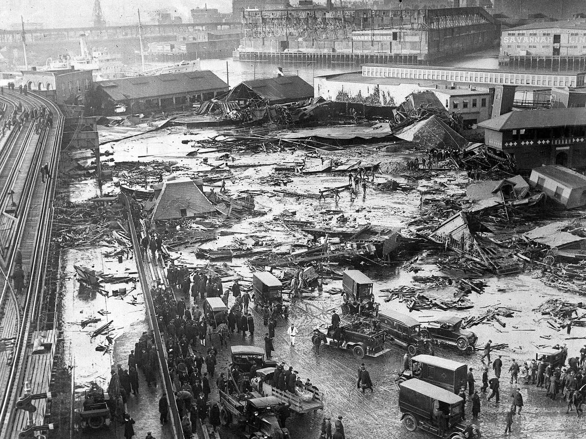

The Great Molasses Flood: The Day a Deadly Wave of Syrup Destroyed Boston

It was January 15, 1919, at about 12:30 in the afternoon. People and workers in Boston’s North End heard a low, grinding rumble. A few seconds later the sound grew into a deafening roar.
Then a wall of dark, thick liquid burst from a huge storage tank near Commercial Street. It was molasses, a sticky brown syrup. There were about 2.3 million gallons of it, weighing about 13,000 tons. It rushed through the crowded neighborhood at an estimated 35 miles per hour.
Sources do not agree on how high the wave was. Witnesses said it was between 15 and 25 feet high at its peak. A plaque at the site says 40 feet. It was like a tsunami made of syrup. It crushed buildings and overturned wagons and motor vehicles. It trapped men, women, and children in the thick, sticky mass.
When the molasses finally stopped moving, 21 people were dead and about 150 more were injured. Buildings had been shifted off their foundations. The firehouse of Engine 31 was badly damaged. A firefighter from Engine 31 was among the dead. A train on the Boston Elevated Railway was knocked off its tracks. The wave drove pieces of steel from the tank into the railway structure. Horses and people were stuck in the thick brown liquid.
This was not an earthquake or an attack. The tank had serious flaws. It was overseen by a man with no engineering training. And it was filled to the top without a basic leak test.
The tank belonged to the Purity Distilling Company. USIA bought Purity Distilling in 1917. USIA stands for the United States Industrial Alcohol Company. The tank stood on Commercial Street in the North End of Boston.
The North End was, and still is, one of the oldest neighborhoods in Boston. It was crowded, with narrow streets, tenement buildings, and small shops. Many immigrants had made their homes there. Many of the people were working families who lived near the industrial waterfront.
The company had built its huge tank on the waterfront in 1915. World War I was going on, and the demand for industrial alcohol was high. This alcohol was made by fermenting molasses. Ethanol, a kind of alcohol, was a key part of the explosives used in the war.
The tank was a business tool in a time of war. The neighborhood around it was treated as an afterthought. Then the tank failed, and the neighborhood paid the price.
The story begins with Arthur P. Jell. He was the treasurer of USIA, and he oversaw the building of the tank in 1915. Jell was a businessman, not an engineer. He had no engineering or architecture training.
Even so, he was put in charge of building a very large tank. It stood 50 feet tall and was 90 feet wide. It could hold 2.3 million gallons. That is about the same as three and a half big Olympic swimming pools. The plans came from a firm called Hammond Iron Works. The owners did not have engineers check the plans.
From the start, the tank had problems. It leaked badly. People in the neighborhood collected the molasses that oozed out and took it home.
Residents complained about the leaks. The company did not make the tank stronger. Instead, it painted the tank brown, so that the leaking molasses would be harder to see.
The tank was never given a full test with water. That is the usual engineering step of filling a new tank with water first, to see whether it is strong enough. The company skipped basic leak tests.
Experts studied the case again many decades later. A study in 2014 found that the steel walls were only about half as thick as they should have been. The steel also lacked a metal called manganese, which makes steel tougher. And the rivets, the metal pins that hold steel plates together, were flawed.
The molasses was kept in the tank until it was sent to be made into alcohol. The profits were large. Many people think that gave the company a reason to cut corners. The choice had deadly results.
There is a sad twist. The war had ended two months before the disaster, on November 11, 1918. But the tank was still full. The company was reportedly trying to get ahead of Prohibition. This was a ban on alcoholic drinks. The Eighteenth Amendment, which began it, was approved by the states the very next day, on January 16, 1919. The ban itself started in January 1920.
The weather on January 15, 1919, probably played a part. The days before had been bitterly cold. On the 15th, the temperature rose above 40 degrees Fahrenheit. That was a big jump.
A ship had also delivered a fresh load of molasses the day before. The molasses had been warmed so that it would flow more easily. It was pumped into the tank.
Many experts think that the warm molasses and the weak walls and rivets were a deadly mix. At about 12:30 PM, the tank gave way. The tank burst and let out its 2.3 million gallons of molasses.
The nature of molasses made the wave extra dangerous. Molasses weighs about 12 pounds a gallon. That is about 1.4 times as heavy as water, and it is far thicker. So a wave of molasses has much more crushing force than a water wave of the same size. It also does not drain away. It surrounds and holds everything in its path.
The wave damaged the Engine 31 firehouse. It hit the Boston Elevated Railway tracks and drove pieces of steel from the tank into the structure. It swept away wagons and vehicles. People were trapped in thick molasses.
Those caught in the wave could hardly move in the thick, sticky liquid. Most of the 21 people who died were killed by suffocation. This is a very sad part of the story.
The 21 victims ranged in age from 10 years old to 78 years old. They included laborers, drivers, and two 10-year-old children. There was also a firefighter from Engine 31.
A study by Harvard scientists in 2016 found that the molasses cooled and thickened quickly in the cold air. That made it much harder to rescue people. Some victims could not get out of the molasses in time.
Many people came to help. Cadets from the U.S. Navy ship Nantucket arrived first. Boston police and the Red Cross came too. The cleanup was hard. Workers found that salt water broke down the molasses. They used a fireboat to spray salt water, and then they spread sand. The harbor stayed brown until summer.
Right after the disaster, USIA began a loud public campaign to avoid the blame. The company said that anarchists had bombed the tank. Anarchists are people who want to destroy governments. The company said so because some of its alcohol was used for weapons.
USIA’s lawyer blamed Italian anarchists. A writer says that this story was invented. It played on the fear of foreigners that was common then, and it was meant to avoid the blame.
The victims’ families did not believe the anarchist story. About 120 people joined together in a class-action lawsuit against USIA. This means many people sued as one big group.
The court chose Hugh W. Ogden, a colonel and lawyer, to look into the disaster. He was a court-appointed auditor. He heard from many witnesses. The case went on for years.
His report, issued in 1925, was harsh. Ogden found USIA responsible. He decided that the weak tank, and not anarchists, was the cause.
The flood changed building rules. Before 1919, rules for large industrial storage tanks were weak. Owners could build them with little checking.
After the flood, cities and states changed how they check building plans. Rules began to require engineers to sign and seal plans. Inspectors began to examine projects. These changes began in Massachusetts, and then spread across the country.
One source says the court set total damages at $628,000. Another writer gives a much higher figure. The families of the victims reportedly received about $7,000 for each victim. By today’s standards it was not a lot of money. But it was an important finding that the company was responsible.
One of the longest-lived legends about the flood is about a smell. It is said that on hot summer days the North End of Boston still smells of molasses. According to local stories, the smell lingered for decades after the flood.
The story has been told in countless articles, books, and documentaries. Is the smell real, or is it only a shared memory and the power of suggestion? That is hard to say. The area has been rebuilt many times since 1919.
The site of the tank is now Langone Park. Puopolo Park is nearby. There is a memorial plaque for the disaster. In 2019, at a ceremony 100 years after the flood, workers used a radar that looks underground to find the base of the old tank. The legend lives on. It shows how even strange disasters leave marks on the communities they strike.
The Great Boston Molasses Flood of 1919 is often remembered as a curiosity. It seems like a bizarre footnote in history, so strange that it sounds like an urban legend. But it was real, and it was deadly. Twenty-one people lost their lives.
The disaster was not an act of God. A court found that the company was responsible. The legal fight that followed lasted about six years. It ended with Hugh Ogden’s finding against USIA. The case helped bring new rules for engineering.
The flood taught America that large industrial structures must be designed by qualified people and checked before use. These lessons seem obvious now. But they were not normal practice before January 15, 1919.
The victims were laborers, drivers, a firefighter, and children. They deserve to be remembered as people who suffered a tragedy. They are not characters in a funny story. The sweet smell of molasses, said to linger for years, is not a joke. And people in Boston still wonder whether that smell is real.
References & Further Reading
📚 Recommended Reading: Dark Tide by Stephen Puleo (on Amazon) — As an Amazon Associate, we earn from qualifying purchases.
Editorial note: The flood really happened, and a court found that the company was to blame for a weak tank. Sources do not agree on how high the wave was, and the smell legend is a local story. See our Editorial Policy.